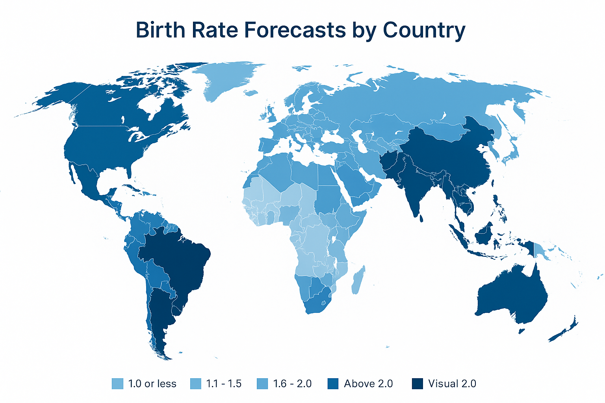

Global Birth Rates Are Falling — And the World Isn’t Ready
Over the past 60 years, the global birth rate has declined by nearly 50%, dropping from 36.4 births per 1,000 people in 1960 to just 18.5 in 2020. This significant decrease is changing the face of societies worldwide — from the composition of workforces to the design of social welfare systems.
According to the World Bank, much of this drop stems from industrialization, urbanization, and increasing education among women. Developed nations are seeing birth rates well below the replacement level of 2.1 children per woman. In 2023, South Korea recorded a fertility rate of just 0.72 — the lowest in the world.
Japan, Italy, and Germany also report ongoing declines, with populations aging rapidly. This trend is not limited to developed countries — emerging economies are beginning to experience similar patterns as they modernize. The U.S., for example, saw its birth rate fall from 14.4 in 2000 to 11.0 per 1,000 people in 2022.
The consequences are far-reaching. Fewer working-age people means fewer contributors to pension systems and healthcare funding. Schools may close while eldercare facilities expand. Entire industries will be forced to pivot.
The United Nations projects that by 2050, one in six people globally will be over the age of 65, up from one in eleven in 2019. Countries are responding with varying strategies — from incentivizing childbirth (as seen in Hungary and Singapore) to revising immigration policies to offset labor shortages.
For many governments, the demographic shift is not just about managing decline, but seizing the opportunity to redesign societies. This includes investing in automation, rethinking retirement, and leveraging technology to maintain productivity with smaller workforces.
StatMint’s compilation of birth rate data reveals how urgent and interconnected this issue is. Below are key graphs showing historical trends and projections across continents.
Source: United Nations Population Division

Source: U.S. Centers for Disease Control and Prevention
Long-Term Forecasts and Societal Implications
According to recent projections from the United Nations, countries with declining birth rates may face existential economic questions. By 2100, populations of countries like Japan and South Korea may shrink by over 50% if current trends persist. This could trigger a domino effect on global labor markets, supply chains, real estate, and education systems.
In contrast, Sub-Saharan Africa is expected to experience population growth due to higher fertility rates. Nigeria, for example, is projected to become the world’s third most populous country by 2050. This geographic disparity may shift the global center of influence toward developing regions, necessitating robust infrastructure and education investments.
Meanwhile, countries with falling fertility rates are experimenting with solutions. France offers subsidized childcare and tax benefits. Sweden invests in parental leave policies. Singapore has launched dating and fertility programs to encourage population growth. However, no silver bullet has reversed the declining birthrate trend at scale.
StatMint continues to monitor birthrate and demographic shifts with a focus on data-backed analysis, global comparisons, and credible visualizations.

Visual generated using StatMint internal analysis and UN forecast data
Wall Street Journal Insight
In a 2024 investigative series, the Wall Street Journal highlighted the connection between birth rate declines and long-term economic contraction. One featured graphic showed a projected decrease in GDP growth across G7 nations by 2060, with birth rates acting as a leading indicator.

Source: Wall Street Journal, 2024
Global Forecasted Birthrates by Country (2050)
StatMint presents a global heatmap forecasting birthrate trends across 190+ countries. These estimates are based on World Bank fertility data, UN demographic projections, and observed social and economic indicators. Darker areas represent countries with higher expected fertility rates.
Source: StatMint Forecast • United Nations • CDC • World Bank